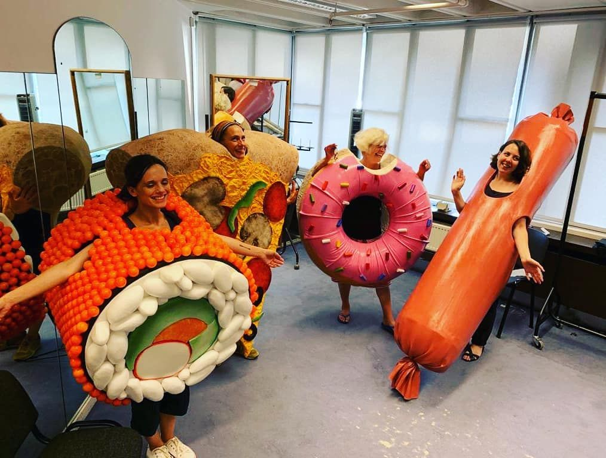

Måltider i förskolor
Inom Kigurumi kommun tillagas 4 000 portioner varje dag. Vi vill att alla barn och ungdomar ska känna matglädje och mår bra av maten som vi serverar.God och näringsrik mat
Bra mat är mat som eleverna lockas av och tycker om, men som också utmanar deras smaker och preferenser. Det är många saker som påverkar om maten uppfattas som god, bland annat hur måltiden presenteras och serveras. Oavsett om maten lagas från råvaror eller med hjälp av hel- och halvfabrikat så ska livsmedlen vara av god kvalitet. Maten ska både uppfylla kroppens näringsbehov och att förebygga ohälsa. Måltiderna ska ge den energi och näring som eleverna behöver för att växa, utvecklas och orka med dagarna i förskolan och skolan. Förskolan och skolan har en pedagogisk möjlighet att visa vad som är hälsosam mat, och på så sätt skapa en grund för bra matvanor.
Måltiderna är en viktig del i förskolans verksamhet – en självklar del av både omsorg och
pedagogik.
Om förskolepersonalen äter tillsammans med barnen uppmuntras barnen till att utforska smaker,
dofter, färger, konsistenser, nya livsmedel och olika matkulturer.

... som är hållbar
Vår livsmedelskonsumtion påverkar omgivningen både negativt och positivt. Genom att vi gör medvetna val och jobbar för att minska matsvinnet kan måltiderna i förskolan och skolan bidra till en minskad miljöpåverkan och bra villkor för både människor och djur. Miljösmarta livsmedelsval handlar dels om att vi ökar mängden grönsaker och minskar mängden kött, dels om att vi gör miljösmarta val i respektive livsmedelsgrupp.
Kigurumi kommun har som mål att senast år 2020 ska 40 procent av inköpen vara ekologiska. Vi mäter även matens klimatpåverkan och jobbar med säsongsinspirerade och närodlade livsmedel. Genom vår livsmedelsupphandling köper vi bland annat ägg och säsongsråvaror från lokala producenter.
i en trivsam miljö
Måltidsmiljön har stor betydelse för helhetsupplevelsen av måltiden. Samvaro med andra barn och vuxna, trevligt bemötande och en trivsam miljö är avgörande för en positiv måltidsupplevelse. En trivsam måltidsmiljö ökar chansen att barnen äter sig mätta och minskar risken för bråk vid matbordet. Även ljudmiljön påverkar måltidsupplevelsen.Vad måste vi förhålla oss till?
Det är viktigt att den mat som vi köper och serverar är både nyttig och bra producerad. Varje år köper Kigurumi kommun nämligen upphandlade livsmedel för ungefär 40 miljoner kronor. Vad vi köper in styrs genom vår livsmedelsupphandling av kommunens kostpolicy, miljöpolicy och krav på klimatsmart mat.I upphandlingen har vi lagt stor vikt på sociala och etiska krav, krav kring djuromsorg och önskemål om ekologiska produkter. Det är viktigt att vi främjar en ekologisk livsmedelsproduktion genom våra inköp. Därför har kommunen under många år successivt ökat andelen miljömärkta livsmedel. År 2020 ska andelen miljömärkta livsmedel och Fairtrade av totala mängden livsmedel (kronor) handlat av grossist vara minst 40 procent för hela kommunen.
Det finns även flera lagar som styr vilka livsmedel vi ska köpa och servera, bland annat Lagen om offentlig upphandling (2007:1 091) LOU , Livsmedelslagen (2006:804) och Skollagen (2010:800 kap 10). Utöver dem tar vi även hänsyn till Livsmedelsverkets näringsrekommendationer och de nationella folkhälsomålen.
Delaktighet är viktigt
Det är viktigt att barnen får vara med och tycka till om maten. Därför jobbar vi med matråd och önskeveckor. I matråden träffas elever, pedagoger, rektor, skolsköterska och kockarna fyra gånger om året och pratar om vad som fungerar och vad som behöver förbättras. Här pratar vi också om andra saker som påverkar måltiden, som till exempel ljudnivåer, tillräckligt med tid att äta och hur menyn presenteras. En gång varje termin får eleverna önska maträtter till menyn.De populäraste rätterna brukar vara:
- Broccolisoppa
- Köttbullar
- Pannbiff
- Stekt fisk
- Kyckling med currysås
- Köttfärssås
- Ugnsfärs